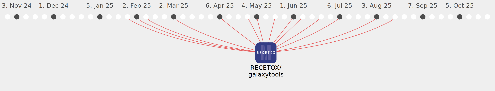

acquayefrank

Commits all-time: 76
Commits last year: 61

(61)
- bf6e48e
- 0d2db50
- 16cb75f
- 00b6fd8
- f835508
- 89a10e4
- 48b5b1a
- 7a1ecfa
- 1a766d1
- 9b6fe2f
- 7192b5d
- 07d45a2
- b4622fa
- 8e0dcae
- e1a6afb
- 5ddc963
- ddc05b6
- f3b398d
- dd59d20
- 21efa10
- 53f7eda
- da8b657
- 0bca5c6
- 0e58199
- 503a8f3
- 42da501
- 447d7e0
- c98e069
- f6fe16e
- 49fd670
- 88bce21
- c4b9d9e
- 5130176
- d45f10e
- e5ea87a
- b981e7f
- 767dd26
- 8ae5e36
- e3a26f6
- 40aa460
- c90e426
- 2cd8443
- ffcc892
- c2de073
- ce0ca19
- 08b6b7c
- c62a1e5
- b4e2cfc
- 1d7f635
- 614558a
- 06d44bf
- 5dc9d7c
- 4228ee9
- 844f266
- 20d5a9c
- 2c6ef41
- 59478ad
- 58a28d6
- 8e381fa
- 47c708a
- fe13ab4